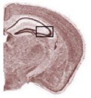
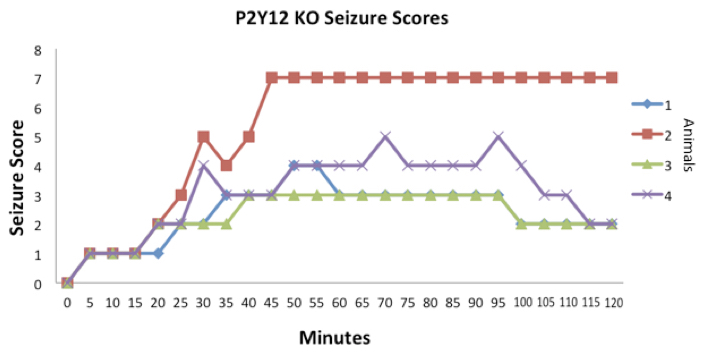
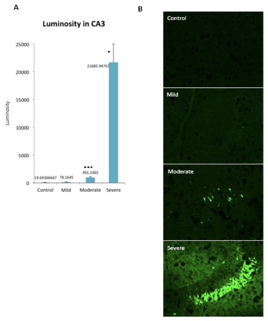
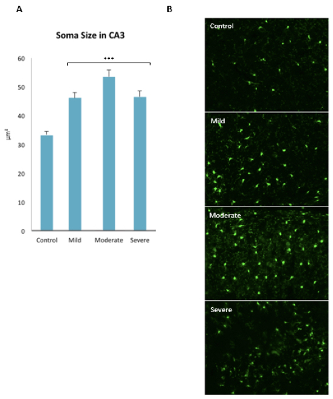

Case Studies on Microglia Morphology One Day After Kainic Acid-Induced Seizures in P2Y12 KO Mice
Writer: Sruchika Sabu
Date: Fall 2016
Citation: Sabu, S., Eyo, U., & Wu, L. J. (2016). Case Studies on Microglia Morphology One Day After Kainic Acid-Induced Seizures in P2Y12 KO Mice. Rutgers Research Review, 1(2).
My name is Sruchika Sabu and I am a senior majoring in Cell Biology and Neuroscience and minoring in Psychology at Rutgers University. I have worked in the Wu Lab for over 2 years and am continuously encouraged to expand my projects and actively contribute to the lab. During my final academic year, I plan on completing a departmental honors thesis. After that, I aspire to pursue M.D./Ph.D. degrees to delve further into the field of neuroscience and neuropathology.
Neuroscience is a field concerned with neurons and their interactions with other nervous system facilitator cells. One example of these cells are glial cells, which serve a number of support functions in the nervous system. This study is focused on a subset of glial cells known as microglia which have an immune function in the central nervous system (CNS, which consists of the brain and spine). Microglia primarily perform their immune response through macrophage activity which involves engulfing and digesting cellular debris. When microglia enter an "activated" form, they appear to increase in size and also become a more round, amoeboid shape. They also respond to injury by migrating or extending their processes towards damaged tissue (Hanisch & Kettenmann, 2007).
In order to effectively do this, microglia use the P2Y12 receptors located on their membranes. The P2Y12 receptor is a purinergic receptor for ADP. It is responsible for microglial chemotaxis (process reaching and touching) during CNS injury (Haynes et al., 2006). It has been found that without the P2Y12 receptors as in P2Y12 KO mice, mice have difficulty moderating seizures (Eyo et al., 2014). Because of this discovered pattern, it might be expected that there is an increase in both neurodegeneration and microglial activation with worse seizures through the absence of P2Y12. Thus, the current study is focused on correlating seizure severity in P2Y12 KO mice with neuronal death and microglial activation. We evaluated neuronal death using a stain for neurodegeneration known as Fluoro-Jade B and microglia activation was measured through changes in microglia soma size.
To study seizure, we are using inducing seizures through kainic acid, a glutamate (excitatory neurotransmitter) analog with preference for kainite receptors (Ben-Ari & Cossart, 2000). For this study, we were primarily interested in the hippocampus, an important part of the brain in seizure models. In particular, we focused on a special region located on the lateral border of the hippocampus known as the CA3 region (Figure 1). This area is the most affected in the kainic acid seizure models due to the relatively high density of kainite receptors; it is sometimes referred to as the place where seizures originate (Lévesque & Avoli, 2013).

Figure 1: Region of Interest in this Study. The CA3 region of the hippocampus was the focus of this study. CA3 images had the lateral cell layer bordering the hippocampus on the edge of the viewing field, indicated by the boxed area.
Five P2Y12 KO mice, aged P28, and with an average mass of 12 g were used. All mice were transgenic and had green fluorescent protein (GFP, a genetically integrated fluorescent marker widely used in biology) expressed in microglia to help identify the cells for imaging. One of them was designated as a control subject for seizure activity; the others were designated for one day following seizure to use one day/24 hours as the regular time point for post-seizure. Mice were injected intraperitoneally with kainic acid.
An observational seizure-scoring experiment was conducted over two hours post-injection. Every five minutes, mice were given a blinded numeric score based on their behavioral reaction to the drug. Animals that died before they could be sacrificed a day later are not used further into the experiment.

Table 1: Descriptions of different seizure stages in experiments.
Animal 1 experienced a moderate seizure, with an onset time of 33 minutes. It reached up to Stage 4 in scores. Animal 2 had the most severe seizure, with an early onset at 14 minutes-leading to death at 41 minutes. Animal 3's seizure was the mildest, reaching Stage 3 with an onset at 35 minutes. Animal 4 had a severe seizure, reaching Stage 5 seizure with a 29 minute onset (Figure 2). Animal 2 could not be used for further analysis due to its death in the experiment. Animal 3 will now be classified "Mild," Animal 1 will be discussed as "Moderate" and Animal 4 will be discussed as "Severe."

Figure 2: Seizure scores for P28 seizing mice, animals 1-4. Onset times: Animal 1 – 33 minutes; Animal 2 – 14 minutes; Animal 3 – 35 minutes; Animal 4 - 29 minutes.
The neurodegeneration marked by Fluoro-Jade B has noticeable patterns with severity in the CA3 (Figure 3). Both the Moderate and Severe animals show an increase in fluorescence relative to the control animal which indicates a substantial amount of cell death compared to the control subject. There is significantly more fluorescence in the Severe animal compared to control and even the Moderate animal. The Mild seizure animal did not change from control. The soma size increased with increasing seizure intensity (Figure 4) indicating activated or stimulated microglia. All three animals had bigger soma sizes to control.

Figure 3: Fluoro-Jade B luminosity in the hippocampus CA3 region. (A) Luminosity measurements for the four mice in CA3 n=6 per animal. Moderate (***) and Severe (*) are significant to control. (B) Sample images for each region and animal at 20x magnification.

Figure 4: Soma size in the hippocampus CA3 region. (A) Soma size per viewing area for the CA3 hippocampus region. n=50 per animal. Mild (***), Moderate (***) and Severe (***) are significant to control. (B) Sample images for each animal at 20x magnification.
This study investigated the correlation between seizure severity and both neuronal degeneration and microglial activation in the CA3 region of the hippocampus. The most striking data is with regards to neurodegeneration. It shows a clear correlation between seizure severity and degenerating neurons as measured by Fluoro-Jade B. The Severe seizure animal was the only one that reached Stage 5 seizure; this correlated with drastic Fluoro-Jade B fluorescence levels. This was observed in a smaller magnitude with the Moderate seizure animal. Most of the consistent differences from control in soma size and neurodegeneration occur in the Moderate animal. Because the FJB fluorescence was similar in the control and the Mild mouse, it may be suggested that mild seizures do not lead to detectable neurodegeneration after a day of seizure.
Seizures correlated with an increase in microglial activation as well. All three seizure animals had largely increased average soma size. These results suggest that generally, microglial activation occurs in the hippocampus even in less severe seizure cases irrespective of the degree of neurodegeneration.
Though a case study such as this cannot claim many grand concepts, it can direct the study of epilepsy. Though previously observing that the absence of the P2Y12 receptor leads to worse seizures, it is seen here that there are still cases where P2Y12 KO animals experience mild seizures with minimal neurodegeneration. It is clear that there is more to the process with the complicated differences between seizure severity and neurodegeneration vs. microglia activation. Activated microglia do not necessarily lead to neurodegeneration. It seems that microglia activate in response to injury regardless, but extensive injury will lead to the cell death observed in moderate and especially severely seizing animals. It could be that the activation of the microglia is a passive and primary preventive measure for neurodegeneration that could be potentially overwhelmed by severe injury. By doing comparative studies with wildtype mice, we could explore the threshold P2Y12 has for neurodegeneration through seizure.
To extend this project, we plan to use more animals and brain regions to determine if the pattern can be consistently observed in P2Y12 KOs. We also plan to repeat these experiments in wildtype mice to see any differences between wildtypes and P2Y12 KO animals. In addition, we want to add more time points for comparison, such as 3 days, and 7 days post-seizure. In this way, we can continue to classify microglial reactions to seizures and investigate their effects during epilepsy.
References
- Ben-Ari, Y. & Cossart, R. (2000). Kainate, a double agent that generates seizures: Two decades of progress. Trends in Neuroscience, 23, 580-587.
- Eyo, U. B., Peng, J., Swiatkowski, P., Mukherjee, A., Bispo, A., & Wu, L. J. (2014). Neuronal hyperactivity recruits microglial processes via neuronal NMDA receptors and microglial P2Y12 receptors after status epilepticus. The Journal of Neuroscience, 34(32), 10528-10540.
- Hanisch, U. K. & Kettenmann, H. (2007). Microglia: active sensor and versatile effector cells in the normal and pathologic brain. Nature Neuroscience, 10(11), 1387-1394.
- Haynes, S. E., Hollopeter, G., Yang, G., Kurpius, D., Dailey, M. E., Gan, W. B., & Julius, D. (2006). The P2Y12 receptor regulates microglial activation by extracellular nucleotides. Nature Neuroscience, 9(12), 1512-1519.
- Lévesque, M. & Avoli, M. (2013). The kainic acid model of temporal lobe epilepsy. Neuroscience & Biobehavioral Reviews, 37(10), 2887-2899.